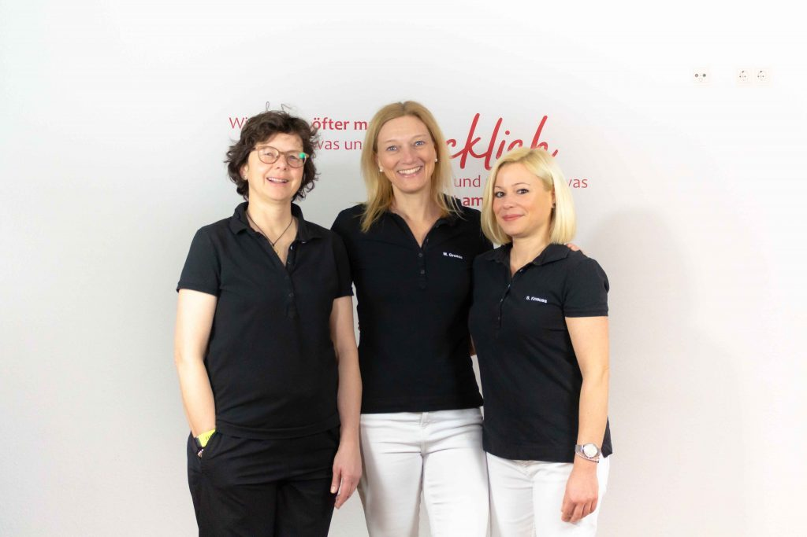
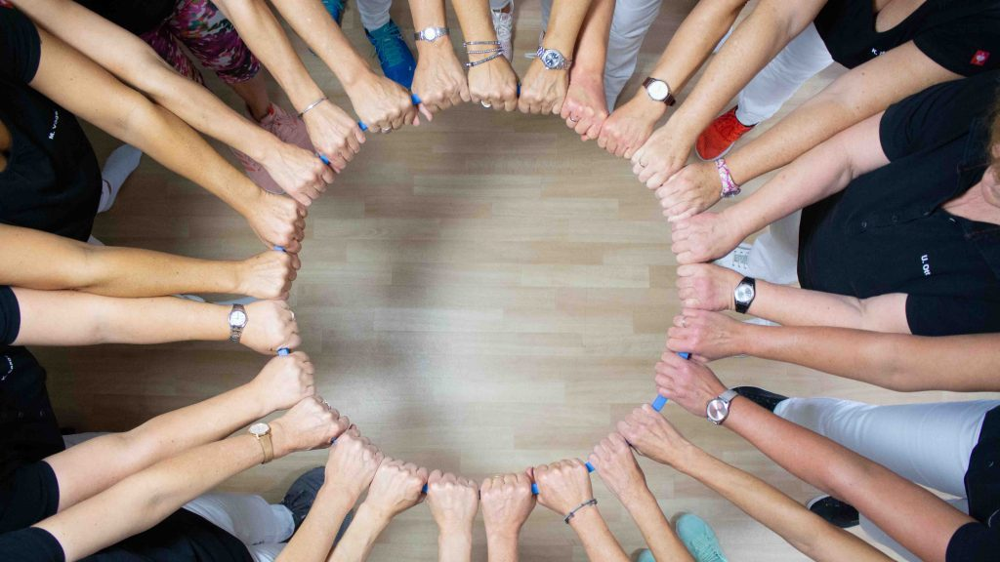
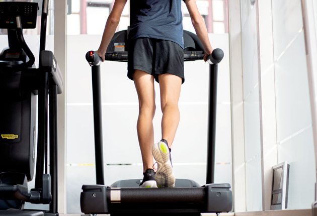
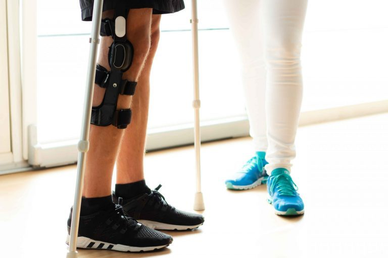

Die Praxis
Fünf Behandlungsräume, ein Konzept
Helle, einladende Räume im Untergeschoss der Ispringer Bahnhofstraße — gebaut für Therapie, Training und Prävention unter einem Dach.

Die Praxisräume erstrecken sich über das gesamte Untergeschoss in der Ispringer Bahnhofstraße 4. Fünf Behandlungsräume, ein Trainingstherapieraum und ein Gerätetherapieraum bieten Ihnen viel Platz, um schnell und nachhaltig fit und gesund zu werden und zu bleiben. Weitere Behandlungsräume befinden sich im Buchenweg 37.
Bei der Einrichtung der Praxis ging es Michaela Grosse darum, helle, einladende Räumlichkeiten zu schaffen, in denen sich jeder gerne aufhält — ob Mitarbeiterin oder Patient:in. Wir hoffen, auch Sie fühlen sich in unseren Räumlichkeiten wohl und tun hier gerne etwas für Ihre Gesundheit, gerne auch über die Therapie hinaus.

Ein umfangreiches Gesundheitskonzept
Wir bieten Ihnen ein umfangreiches Gesundheitskonzept, das Sie auch nach einer abgeschlossenen Behandlung in Anspruch nehmen können. Schauen Sie doch einmal im Bereich Therapeutisches Ergänzungsangebot oder Gesundheits-PLUS nach und gönnen Sie sich zum Beispiel eine Hot-Stone-Massage oder eine individuelle Personal-Trainer-Stunde.
Wir möchten Sie dazu einladen, präventiv etwas für sich und Ihre Gesundheit zu tun. Denn wie das Motto unseres Kurses „Seniorenfit“ lautet: „Wer rastet, der rostet!“ Das gilt übrigens auch für uns: Wir trainieren im Team auch einmal wöchentlich zusammen — und überzeugen uns somit auch höchstpersönlich davon, dass alle Geräte funktionstüchtig sind.
Zwei Dinge wesentlich
Für eine gute, erfolgreiche Therapie
Eine kompetente, nette aber konsequente Therapeutin und die optimale Ausstattung — beides finden Sie in der Praxis Grosse.
Die Praxis ist weitgehend barrierefrei, lediglich am Eingang muss eine kleine Stufe überwunden werden. Sollten Sie hier Hilfe benötigen, rufen Sie vor Ihrem Termin einfach in der Praxis an — wir holen Sie ab.
Wir wissen, dass ein besetztes Telefon frustrierend sein kann: Deshalb versuchen wir, Mo–Fr von 08:00 bis 18:00 Uhr für die Terminvergabe gut erreichbar zu sein, und bieten auch Frühaufsteherinnen und Nachtschwärmerinnen den passenden Zeitpunkt für einen Anruf.


Team
Wir sind ein tolles Team, das zusammenhält
Uns alle verbindet die Leidenschaft, mit unseren Fähigkeiten und Fertigkeiten zu helfen. So ergibt es sich fast von selbst, dass wir neue Programme entwickeln oder regelmäßig Fort- und Weiterbildungen besuchen. Und auch das kommt Ihnen zugute.
Wir tragen gerne dazu bei, dass es Ihnen besser geht. Daher bietet die Praxis Grosse einen Dreiklang an: Therapie – Training – Prävention. Die Idee: Sie als Patient:innen werden dazu eingeladen, aktiv etwas für Ihre Gesundheit zu tun und Folge- und Verletzungen vorzubeugen.
Team & Geschichte